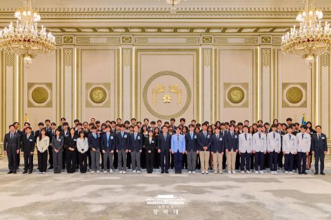
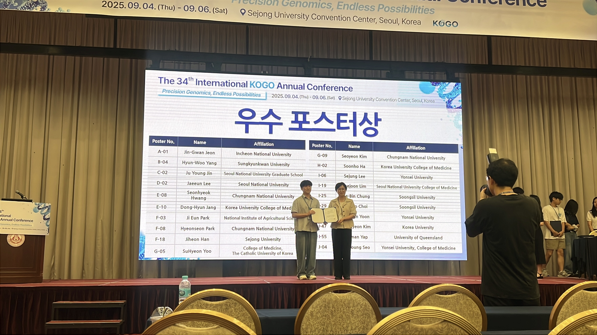
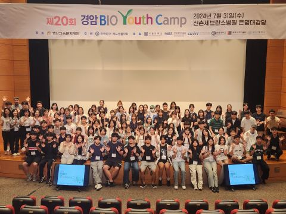

Funding, recognition, and giving research back
Grants and fellowships supporting my graduate research, awards received for presented work, and outreach with students considering a path into science.
Grants & fellowships
-
2025 – 2026

Presidential Science Fellowship for Graduate Studies
Ministry of Science and ICT (MSIT) & Korea Student Aid Foundation (KOSAF)
National fellowship awarded to graduate students in science and engineering. Mar. 2025 – Feb. 2026.
-
2024 – 2025
Graduate Student Research Fellowship
Support for the Next Generation of Scholars, National Research Foundation of Korea (NRF)
Research funding supporting early-stage graduate work in cancer genomics. Sep. 2024 – Jun. 2025.
Awards
-
2025

Poster Excellence Award BIOINFO 2025
Korea Genome Organization (KOGO) Annual Conference
Awarded for “Elucidating genetic profiles and evolutionary trajectories of early-onset breast cancer.”
Outreach & mentoring
-
2024

Student Mentor, Gyeongam Bio-Youth Camp
Korean Society for Molecular and Cell Biology (KSMCB)
Invited back as a mentor to the same youth science camp I attended as a high-school freshman in 2014 — a decade later, on the other side of it. I talked with high-school students weighing science careers about why I chose the field and what the research that followed actually looked like.